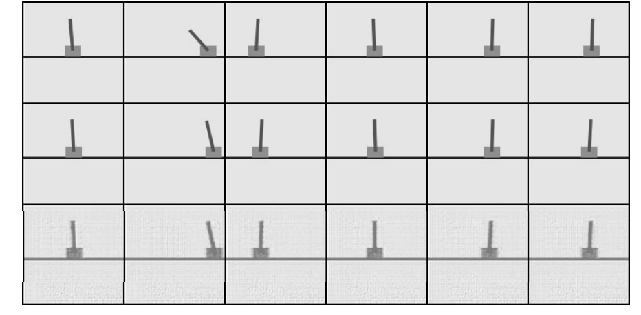
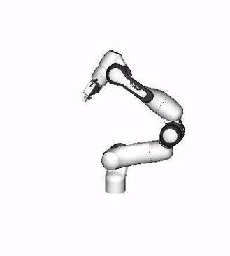
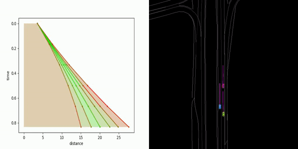

Selected Courses
- CSE 455 (UW, Spring 2018): Computer Vision
- CSE 490 G1 (UW, Autumn 2018): Deep Learning
- EE 447 (UW, Autumn 2018): Control Theory
- EE 474 (UW, Winter 2019): Embedded Systems
- EE 442 (UW, Winter 2019): Digital Signal Processing
- MATH 464, 465 (UW, Autumn 2018 -- Winter 2019): Numerical Analysis
- CSE 490 Z1 (UW, Winter 2019): Modern Algorithm Toolbox
- CSE 490 R (UW, Spring 2019): Robotics
- CSE 457 (UW, Spring 2019): Computer Graphics
- MATH 516 (UW, Spring 2019): Convex Analysis and Optimization
- CSE 599 M (UW, Autumn 2019): Robustness in Machine Learning
- STAT 535 (UW, Autumn 2019): Statistical Learning: Modeling, Prediction, And Computing
- MATH 581 E (UW, Autumn 2019): High Dimensional Probability and Statistical Learning
- EE 546 B (UW, Winter 2020): Optimization and Learning for Control
- CSE 599 I (UW, Winter 2020): Interactive Learning
- EE 448 (UW, Winter 2020): Systems, Controls, and Robotics Capstone
- EE 449 (UW, Spring 2020): Systems, Controls, and Robotics Capstone
- CSE 599 W (UW, Spring 2020): Reinforcement Learning
- CSE 571 (UW, Spring 2020): Probablistic Robotics
- CSE 481 (UW, Autumn 2020): Data Science Capstone
- CSE 578 (UW, Winter 2021): Convex Optimization
- CSE 599 (UW, Winter 2021): Theoretical Deep Learning
Teaching
Scholarships
Misc Projects
 | 2D Drone Linear Control Simulation Control System Analysis Report |
 | Indoor Navigation Robotics Demo, Code |
|  | Cartpole and Localization Robotics Cartpole, HeatMap, Demo |
 | Unsupervised Flow and Depth Computer Vision Poster |
{kind=link}
 | Continuous Trajectory Optimization with ML Statistical Learning Report |
 | Decomposition of Policies Optimization and Learning for Control Report, Summary |
 | Automated Robomaster Battle DJI Demo |
|  | Renderer Visualization Code |
{kind=link}
 | Embedded Drowsiness Detection System Embedded System Report, Demo |
 | Survey for Robust Classification Robustness in Machine Learning Report |
|  | Traffic Prediction for MBRL NVIDIA Talk, Video, Blog |
 | Server Mover Project EE Capstone with Microsoft Demo, Poster |
{kind=link}